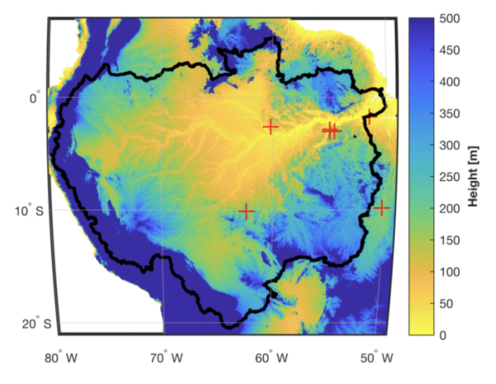

Digging below ground by…

improving root representation in models
Mechanistic representation of root system structure and function is an enormous opportunity for terrestrial biosphere models. For terrestrial water cycling, where as much as two-thirds of water returns to the atmosphere through the vegetative water pathway, the interface of the soil water supply and the plant system is critical for predicting plant responses to water limitation and drought.
PFLOTRAN-Root is a modified version of the PFLOTRAN reactive transport model which simulates three-dimensional root water uptake using the Couvreur macroscale hybridization technique. It has been applied to temperate and tropical forest systems to simulate individual water uptake for upwards of 1000 trees. Check out the repo for the current version.
Agee, E., He L., Bisht, G., Couvreur, V., Shahbaz, P., Meunier, F., Gough, C.M., Matheny, A.M., Bohrer, G., and Ivanov, V.Y. Root lateral interactions drive water uptake patterns under water limitation. (in review)

quantifying root traits
Data from our below-ground systems is severely lagging behind our above-ground system. While some great resources exist (check out FRED – it’s awesome!), more work needs to be done, especially for biodiverse systems like the tropics. I am currently working the Tropical Root Trait Initiative to help gather together published and unpublished root trait data for tropical systems so we can use it pose research questions, test hypotheses, and generate knowledge needed for our next generation of below-ground models.
Linking above and below through…

This tree in the FLONA Tapajós (Brazilian Amazon) has grown and is beginning to eat the sensor.
field observations
During my graduate studies in the HydroWit lab, I helped build and deploy various networks of sensors to quantify water fluxes and stress in trees. These sensors, paired with concurrent below-ground observations, help give insights into the links between above-ground water demands and below-ground water supplies. You can read more about our work in the Brazilian Amazon in the press stories below and in future publications.
“Solve for Life.” Re-engineering Radio and Michigan Engineering. Story: Gabriel Cherry. Photos: Joseph Xu. 2019. podcast, article
“Hands-on in the Amazon.” Michigan Engineering. Story: Gabriel Cherry. Photos: Joseph Xu. July 2019. article
Other Collaborations: I am also currently involved in work going on at the University of Michigan Biological Station. The Forest Threshold and Resilience Experiment (FoRTE), led by PIs Chris Gough and Ben Bond-Lamberty, is examining how how disturbance thresholds impact carbon cycling (and much more). Check out the FoRTE data package available in R!
ecosystem modeling
I am currently working as a postdoctoral research associate with the NGEE-Tropics project, supervised by Anthony Walker. We are using the FATES model to examine how tropical forest structure and function respond to nutrient fertility gradients. My current modeling efforts are focused in tall tropical forests of Lambir Hills, located in Malaysian Borneo.
Looking at the “big” picture by…

analyzing remotely sensed data
As a NASA Earth and Space Science Fellow, I used data from the Geostationary Operational Environmental Satellite (GOES) to estimate long-term hourly evapotranspiration for the entire Amazon River Basin using the Maximum Entropy Production model (MEP). Despite using fewer parameters than the gold-standard Penman-Monteith evapotranspiration models, our results show that the MEP method improves estimates of ET for tropical regions like the Amazon rainforests where cloud cover and dense vegetation increase observational uncertainty.
Xu, D., Agee, E., Wang, J., and Ivanov,V.Y. Estimation of Evapotranspiration of Amazon rainforest with Maximum Entropy Production Theory. 2019. Geophysical Research Letters. doi: 10.1029/2018GL080907 Top 10% Downloaded